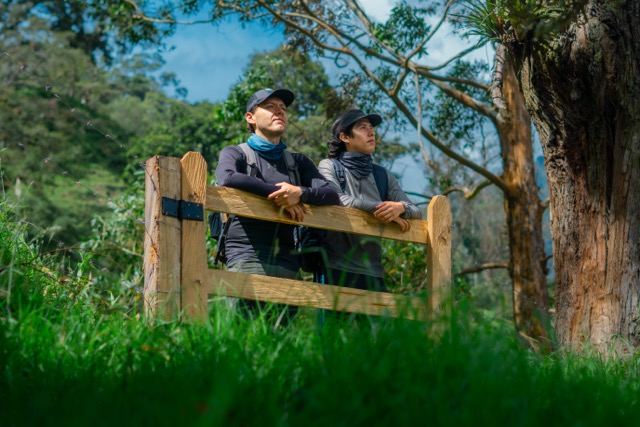

EXPLORAR ↗
EXPLORAR ↗Universitario a los 30
Una serie documental sobre volver a la universidad, aprender y reinventarse.
Explorar producción ↗UNIVERSO CREATIVO
Historias, diseño y tecnología que transforman la imaginación en experiencias.
AUDIOVISUAL · DISEÑO · EXPERIMENTACIÓN
01 / MIS PRODUCCIONES
EXPLORAR ↗Una serie documental sobre volver a la universidad, aprender y reinventarse.
Explorar producción ↗ EXPLORAR ↗
EXPLORAR ↗Conocimiento práctico, procesos y soluciones alrededor de la fibra de vidrio.
Explorar producción ↗
EXPLORAR ↗Historias de territorio, cultura y biodiversidad que preservan la memoria local.
Explorar producción ↗ EXPLORAR ↗
EXPLORAR ↗Una aventura en pareja entre recetas, viajes, hogar y emprendimiento.
Explorar producción ↗DESLIZA PARA DESCUBRIR MÁS ⟷
02 / PROYECTOS
 EXPLORAR ↗
EXPLORAR ↗Montaje y narrativa audiovisual para canales digitales y creadores de contenido.
Conocer proyecto ↗ EXPLORAR ↗
EXPLORAR ↗Exploraciones visuales que combinan movimiento, diseño y tecnología.
Conocer proyecto ↗ EXPLORAR ↗
EXPLORAR ↗DESLIZA PARA DESCUBRIR MÁS ⟷
03 / LAB
Ideas, conocimientos y recursos para descubrir nuevas posibilidades.
Explorar ↗Pruebas, prototipos y procesos creativos en construcción.
Descubrir ↗Experiencias, aprendizajes y herramientas para otros creadores.
Conocer ↗Este rincón está en construcción. Pronto, ideas que también podrás llevar contigo.
PRÓXIMAMENTE